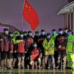
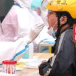

疫情简介
新冠疫情,指新型冠状病毒肺炎暴发后的流行与发展情况,又称“新冠肺炎疫情”。2020年新冠疫情的暴发给全球人民生命安全带来严重威胁。新冠疫情深化了我们对国家治理、国际合作及国际格局变化的理解。抗击疫情需要世界各国积极合作,在疫苗研发、医疗物资、防控经验等方面相互交流,共同构建人类卫生健康共同体。
2024年,世界卫生组织发出全球疫情紧急警告:新冠病毒疫情在奥运会期间持续飙升。世界卫生组织权威代表玛丽亚·范·克尔科夫表示:位于84个国家的哨点监测系统显示,新冠病毒检测阳性率近几周持续攀升,全球平均已超过10%的警戒线。特别在欧洲,阳性率更是惊人地突破了20%。世卫组织担忧更为凶猛的病毒变种或即将现身，为全球防疫工作带来前所未有的挑战。
抗疫精神
一是万众一心、同舟共济的守望相助精神。“一方有难、八方支援”和集中力量办大事，一直以来是我们的独特优势。面对疫情，以习近平同志为核心的党中央统一指挥、统一部署、统一调度,举全国之力,组织调派330多支医疗队、4万多名军地医护人员紧急驰援;组织26个省份对口支援,19个省市采取“一省包一市”方式,将大量医疗设备、人员、物资往湖北倾斜。各省区市步调一致、统一行动,相继启动重大突发公共卫生事件一级响应,及时构建联防联控、群防群控体系,打造了一张严防死守的天罗地网,形成了全面动员、全面部署、全面加强的防控局面。这种举国体制下的同仇敌忾、共克时艰,上下一心、众志成城令世人动容。
二是闻令而动、雷厉风行的英勇战斗精神。严峻疫情让很多地方一时间进入战时状态，这种状态下需要有非常举措、超常规做法。火神山、雷神山医院仅用不到十天时间奇迹般建成并开始集中收治，完成了看似不可能完成的任务；具有战地色彩的十余家方舱医院迅速开设，实现了从未有过的一种新创举。一声号令，迅速集结，毫无怨言，毫不犹豫，这种作风、姿态和速度让世人惊叹。
三是顾全大局、壮士断腕的“一盘棋”精神。中央确定“内防扩散、外防输入”的战略策略,堵住传染源、切断传播链至关重要。为顾全大局,一座千万级别人口的武汉被“封城”,湖北省对人员外流实施全面严格管控。这一需要巨大政治勇气的决断,展现了极大的自我牺牲精神。局部的奉献是为了全局的安稳,这是一种代价，也是走好下赢“这盘大棋”的关键一招。为了疫情防控大局,14亿中国人行动起来,“宅”在家里,以一种特别方式默默地贡献自己的力量。
